Ethernet and ARP 实验报告
Capturing and analyzing Ethernet frames
-
首先，确保浏览器的缓存为空。开启 Wireshark 进行嗅探。
-
在浏览器中输入以下网址:
http://gaia.cs.umass.edu/wireshark-labs/HTTP-ethereal-lab-file3.html -
停止 Wireshark 数据包捕获。首先，找到从本地计算机发送到 gaia.cs.umass.edu 的 HTTP GET 消息的数据包编号（Wireshark 窗口上方最左侧的列），以及 gaia.cs.umass.edu 发送到本地计算机的 HTTP 响应消息的开头。如下图:
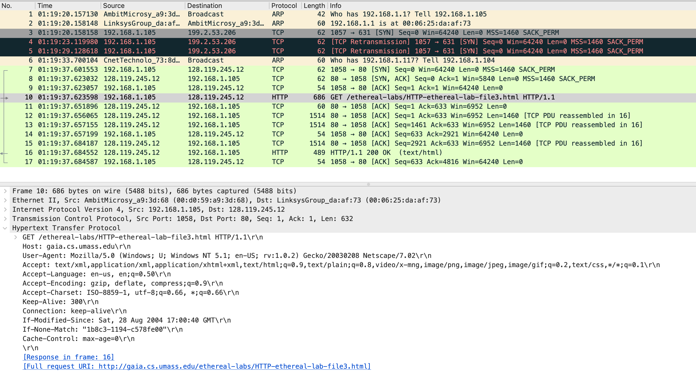 -
更改 Wireshark 的“捕获数据包列表”窗口以便它仅显示有关 IP 下的协议的信息。如下图
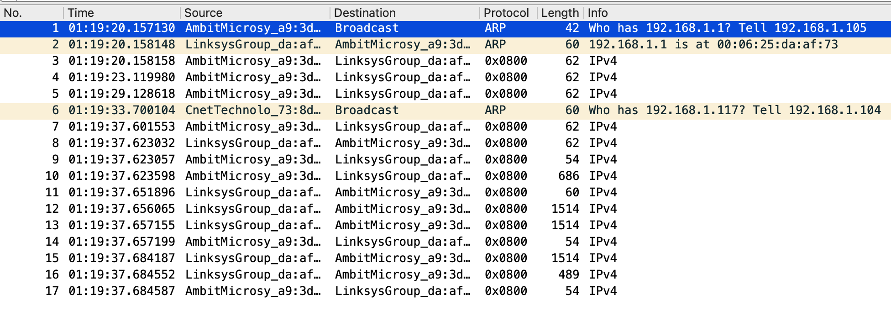 -
选择包含 HTTP GET 消息的以太网帧。在数据包详细信息窗口中展开以太网 II 信息。
对比之前的捕捉窗口，找到包含 HTTP GET 的数据包如下: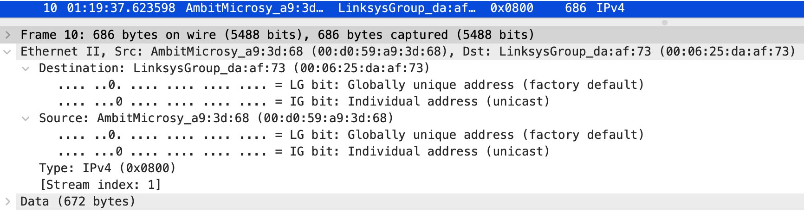
Question
- What is the 48-bit Ethernet address of your computer?
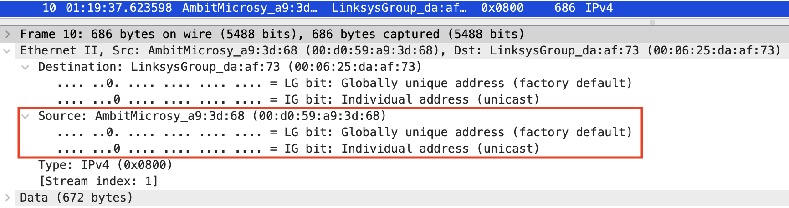
AmbitMicrosy_a9:3d:68(00:06:25:da:af:73) - What is the 48-bit destination address in the Ethernet frame? Is this the Ethernet address of gaia.cs.umass.edu? (Hint: the answer is no). What device has this as its Ethernet address?
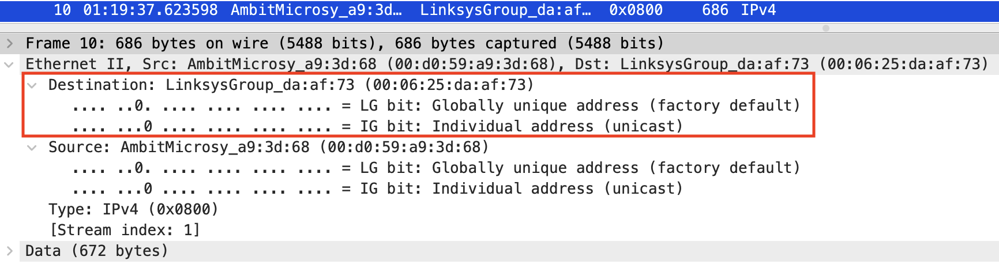
LinksysGroup_da:af:73 (00:06:25:da:af:73); 不是 gaia.cs.umass.edu 的以太网地址，是出子网的路由器的地址。 - Give the hexadecimal value for the two-byte Frame type field. What upper layer protocol does this correspond to?
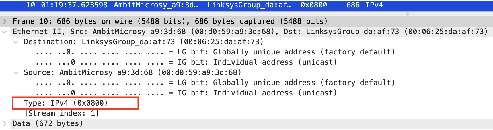
0x0800; IPv4 - How many bytes from the very start of the Ethernet frame does the ASCII “G” in “GET” appear in the Ethernet frame?
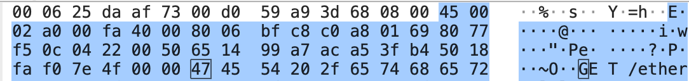
16 3 + 7 = 55 bytes
接下来，根据包含 HTTP 响应消息的第一个字节的以太网帧的内容回答以下问题。
- What is the value of the Ethernet source address? Is this the address of your computer, or of gaia.cs.umass.edu (Hint: the answer is no). What device has this as its Ethernet address?
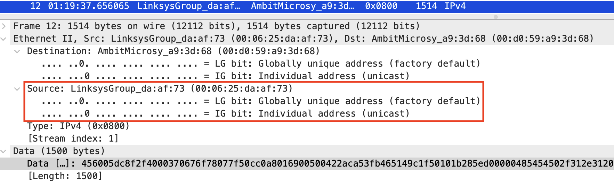
Source: LinksysGroup_da:af:73 (00:06:25:da:af:73)；不是；应该是出子网的路由器的地址 - What is the destination address in the Ethernet frame? Is this the Ethernet address of your computer?
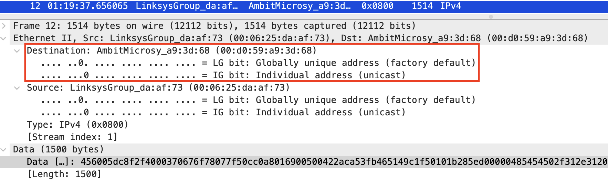
Destination: AmbitMicrosy_a9:3d:68 (00:d0:59:a9:3d:68); 是我的计算机以太网地址。 - Give the hexadecimal value for the two-byte Frame type field. What upper layer protocol does this correspond to?
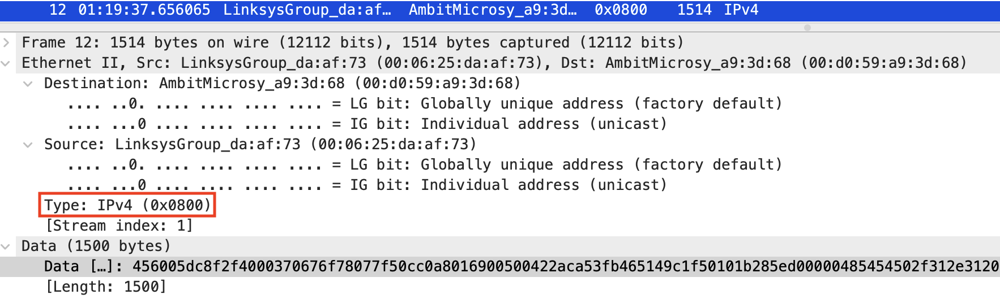
0x0800;IPv4 - How many bytes from the very start of the Ethernet frame does the ASCII “O” in “OK” (i.e., the HTTP response code) appear in the Ethernet frame?
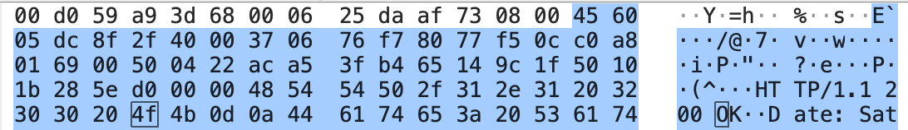
16 4 + 4 = 68 bytes
The Address Resolution Protocol
Question
- Write down the contents of your computer’s ARP cache. What is the meaning of each column value?
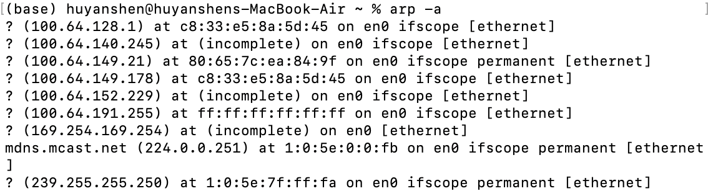
其每一列的意义为: <hostname> (<IP address>) at <MAC address> on <interface>
接下来清除 ARP 缓存，以便电脑能发送 ARP 消息。
- 确保浏览器的缓存是空的,启动 Wireshark 数据包嗅探器.
- 在浏览器中输入以下网址
http://gaia.cs.umass.edu/wireshark-labs/HTTP-wireshark-lab-file3.html - 停止 Wireshark 数据包捕获. 并且弃选 IP 及以上协议。得到如下界面。
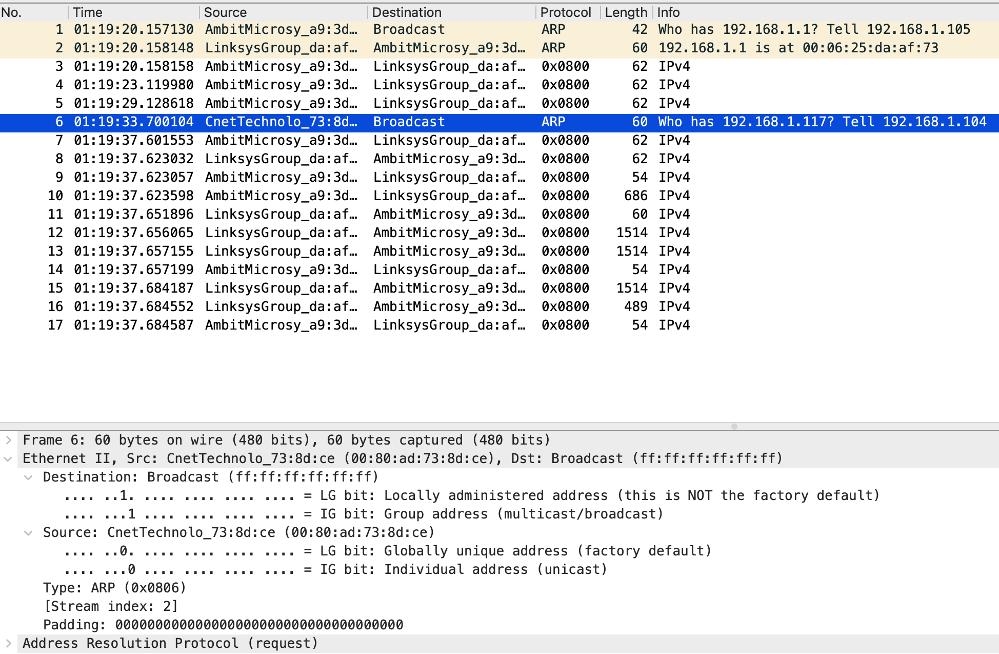
- What are the hexadecimal values for the source and destination addresses in the Ethernet frame containing the ARP request message?
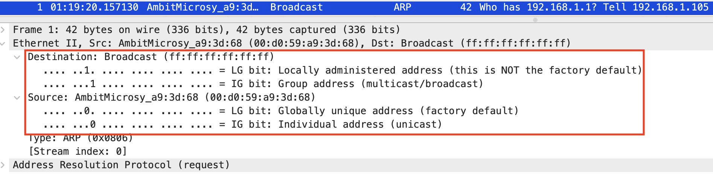
Destination: Broadcast (ff:ff:ff:ff:ff:ff);
Source: AmbitMicrosy_a9:3d:68 (00:d0:59:a9:3d:68) - Give the hexadecimal value for the two-byte Ethernet Frame type field. What upper layer protocol does this correspond to?
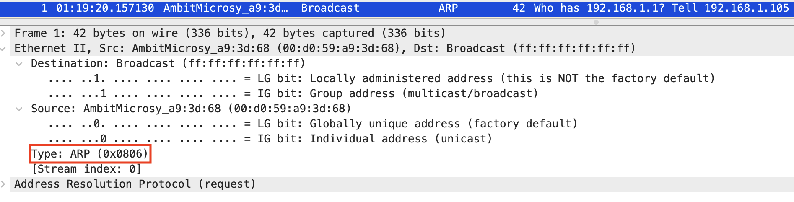
0x0806; ARP - a) How many bytes from the very beginning of the Ethernet frame does the ARP opcode field begin?
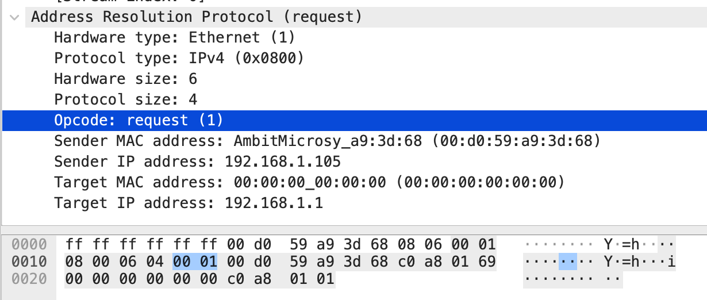
16 + 5 = 21 bytes
b) What is the value of the opcode field within the ARP-payload part of the Ethernet frame in which an ARP request is made?
操作码值为1.
c)Does the ARP message contain the IP address of the sender?
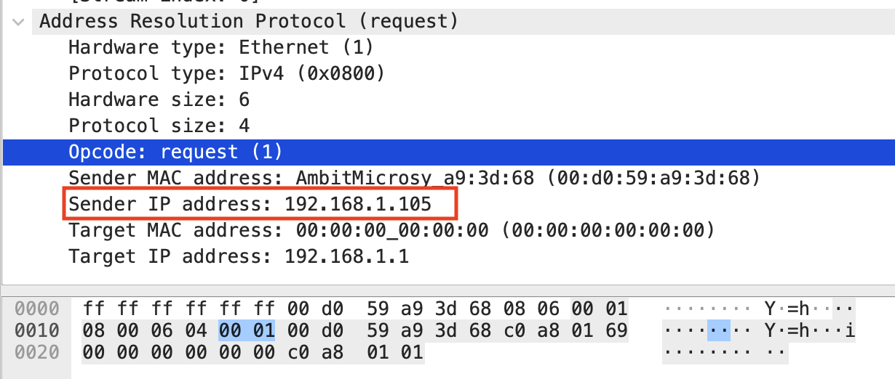
包含
d)Where in the ARP request does the “question” appear – the Ethernet address of the machine whose corresponding IP address is being queried?
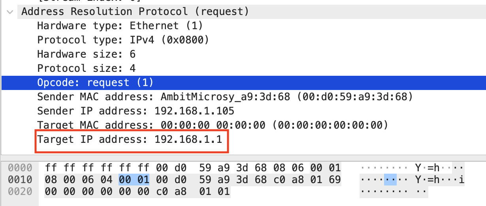
如上图，包含 Target IP address. - Now find the ARP reply that was sent in response to the ARP request.
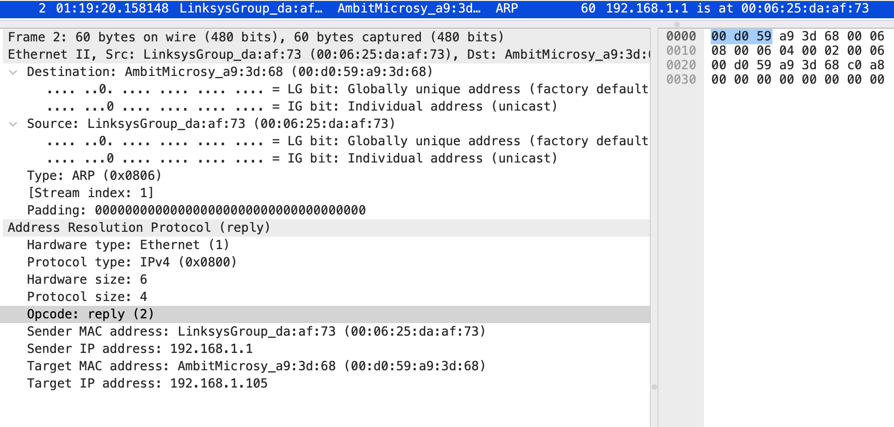
a) How many bytes from the very beginning of the Ethernet frame does the ARP opcode field begin?
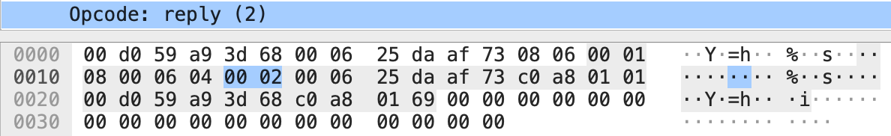
16 + 5 = 21 bytes
b) What is the value of the opcode field within the ARP-payload part of the Ethernet frame in which an ARP response is made?
如上题图，Opcode 为 2
c) Where in the ARP message does the “answer” to the earlier ARP request appear – the IP address of the machine having the Ethernet address whose corresponding IP address is being queried?

在 Sender IP address 项中: 192.168.1.1。 - What are the hexadecimal values for the source and destination addresses in the Ethernet frame containing the ARP reply message?
Destination: AmbitMicrosy_a9:3d:68 (00:d0:59:a9:3d:68)
Source: LinksysGroup_da:af:73 (00:06:25:da:af:73) - Open the ethernet-ethereal-trace-1 trace file in
http://gaia.cs.umass.edu/wireshark-labs/wireshark-traces.zip. The first and second ARP packets in this trace correspond to an ARP request sent by the computer running Wireshark, and the ARP reply sent to the computer running Wireshark by the computer with the ARP-requested Ethernet address. But there is yet another computer on this network, as indicated by packet 6 – another ARP request. Why is there no ARP reply (sent in response to the ARP request in packet 6) in the packet trace?
因为 ARP 查询分组是广播，而响应分组是单播。